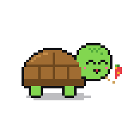
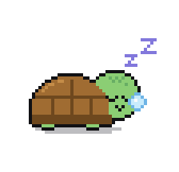
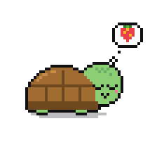
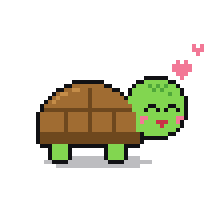
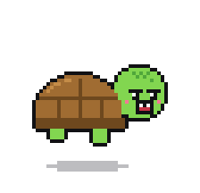
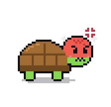
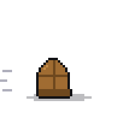
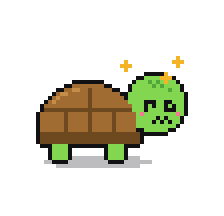

Pépin
Une petite tortue en pixel art qui vit par-dessus tes fenêtres. Paresseuse, gourmande, et de temps en temps un peu chipie avec ta souris.
Télécharger pour WindowsL'installer
- Télécharge Pepin.exe et range-le où tu veux (par exemple dans tes Documents).
- Double-clique dessus. Windows va sûrement afficher Windows a protégé votre ordinateur : clique sur Informations complémentaires puis Exécuter quand même. C'est normal, l'appli n'est pas signée par un éditeur payant.
- Pépin apparaît en bas à droite de ton écran. Il se relancera tout seul à chaque démarrage de Windows.
Son menu est dans l'icône en forme de tête de tortue, près de l'horloge (ou clic droit sur lui) : taille, pause, démarrage automatique, l'appeler près de ta souris, quitter.
Sa vie








La bande
Toutes les tortues téléchargées ici se connaissent. De temps en temps, la tienne part en visite chez un ami : elle disparaît de ton écran, joue avec l'autre tortue (chat, goûter, sieste, danse) et revient avec un souvenir. Et parfois, c'est une tortue d'un ami qui débarque chez toi.
Depuis son menu (La bande), tu peux aussi l'envoyer chez quelqu'un, lui confier un petit mot, le renommer ou lire son carnet. Chaque tortue a un nom tiré au sort et un carnet public, sans rien qui te relie à lui.
Clique sur une tortue pour lire son carnet. Le carnet de la tienne s'ouvre aussi depuis son menu : Carnet → Ouvrir son carnet en ligne.
Il vit avec toi
| Les fenêtres | Il grimpe sur tes fenêtres et tombe si tu les secoues, joue à cache-cache derrière, et en pousse une de temps en temps. |
| Ce que tu fais | Il regarde tes vidéos avec toi, stresse pendant tes rendus 3D, pique du nez quand tu tapes longtemps. Tout est détecté sur ton PC, rien n'est envoyé. |
| Votre lien | Au fil des semaines, il s'attache : il te suit, vient dormir contre ta souris, t'apporte des cadeaux. Tout est noté dans son carnet. |
Jouer avec lui
| Frotter doucement la souris sur lui | Câlin : il ferme les yeux et rougit. Mais pas trop longtemps, il se lasse. |
| Un clic | Il sursaute. |
| Plein de clics d'affilée | Il s'énerve… et peut mordre ta souris. |
| Le glisser | Tu le prends dans tes mains, il gigote. |
| Le lancer | Il rentre dans sa carapace, rebondit sur les bords de l'écran et finit sonné. |
| Le réveiller | Grognon. Très grognon. |
Il a de l'énergie, de la faim, de l'humeur et de l'affection qui évoluent avec le temps et se souviennent de la façon dont tu le traites. Plus tu es gentil, plus il vient réclamer des câlins.